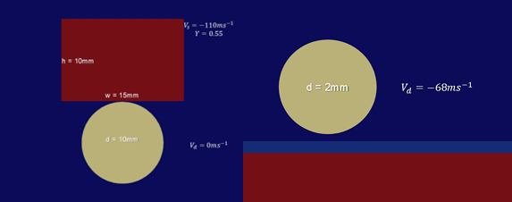
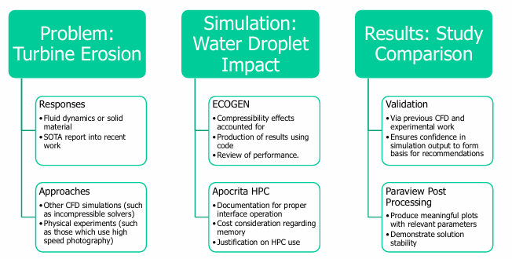

High-Speed Water Droplet Impact Modelling
A numerical investigation into short-duration, high-speed water droplet impact using a compressible multiphase CFD approach. The project examined solver configuration, mesh refinement strategy, and transient pressure response, with relevance to erosion mechanisms in turbine and high-speed flow applications.
At a Glance
- Methods: Compressible multiphase CFD, transient simulation
- Tools: ECOGEN, ParaView, HPC
- Focus: Pressure evolution, mesh sensitivity, solver behaviour
Problem Context
High-speed droplet impacts generate extreme, short-duration pressure loads and are a known contributor to leading-edge erosion in turbine blades and similar structures.  Accurately capturing this response numerically requires careful treatment of compressibility effects, multiphase interfaces, and spatial resolution during the early stages of impact.
Simulation Workflow
A simulation workflow was developed to balance physical fidelity with computational cost. Particular emphasis was placed on justifying the use of a compressible solver, applying mesh refinement in regions of interest, and assessing sensitivity to key numerical parameters within practical HPC constraints.
Key Results

The simulations captured early-stage pressure evolution and shock formation during droplet impact. Peak pressure magnitude and temporal response were strongly influenced by local mesh resolution, with increased refinement improving solution trends while exhibiting diminishing returns relative to computational cost.
Limitations & Lessons
The study highlighted the sensitivity of transient multiphase simulations to solver configuration, mesh resolution, and timestep selection. It reinforced the importance of clearly defining validity limits and numerical assumptions when interpreting short-duration CFD results.